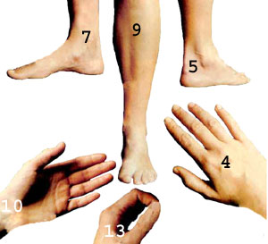

POINT NO. 4?located above the wrist?assuages pain in the arm and hand, head and face, elbow, shoulder, and wrist . . . and should be used to help relieve persistent coughs. POINT NO. 5?behind the bulge of the outer ankle?can help alleviate the discomfort of pains in the back, face, foot, hip, and rectum . . . along with sprains and muscle pulls. POINT NO. 7?above the bulge of the inner ankle?relieves indigestion, flatulence, constipation, and diarrhea . . . plus stomach, leg, foot, and common menstrual difficulties. POINT NO. 9?the most potent point of all?is located three inches below the bottom edge of the kneecap, between the shin-bone and the front of the calf muscle . . . and can be used to ease the discomforts of indigestion, backache, diarrhea, constipation, leg pains, and nagging headaches. POINT NO. 10?which can be used to control bleeding?may also be used for chest pains, menstrual problems, seasickness, hiccups, coughs, and symptoms related to shock. POINT NO. 13?hidden between the thumb and index finger?is good for headaches, neck pains, and toothaches ... as well as problems of the hand, elbow, arm, and foot.